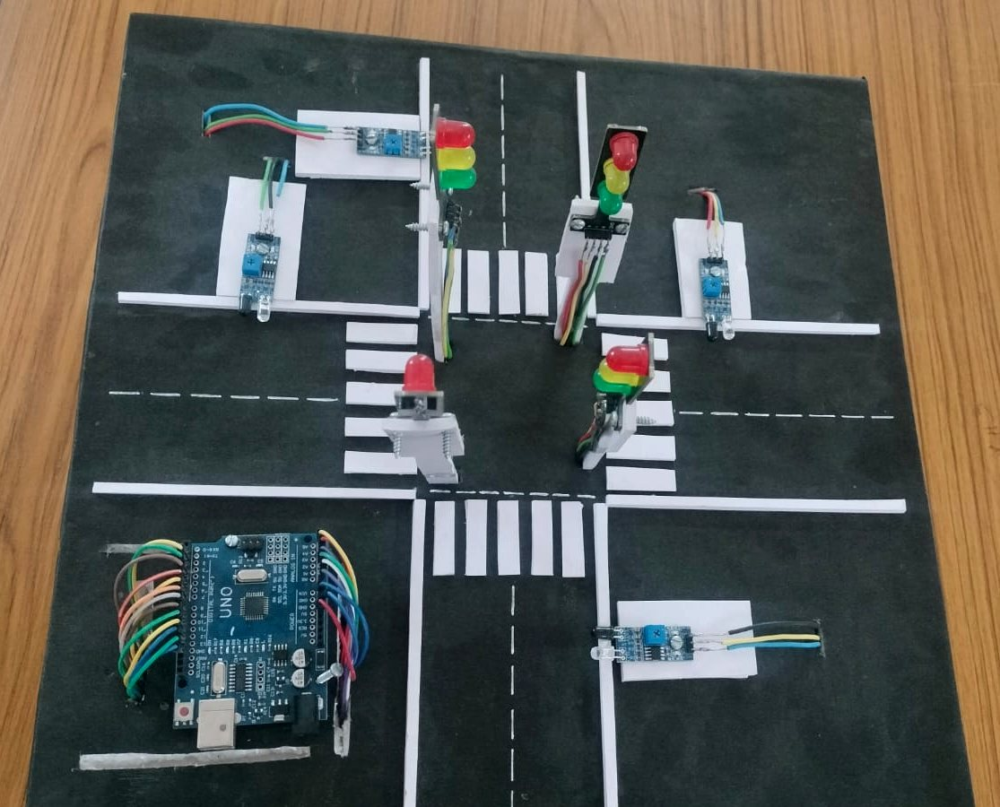
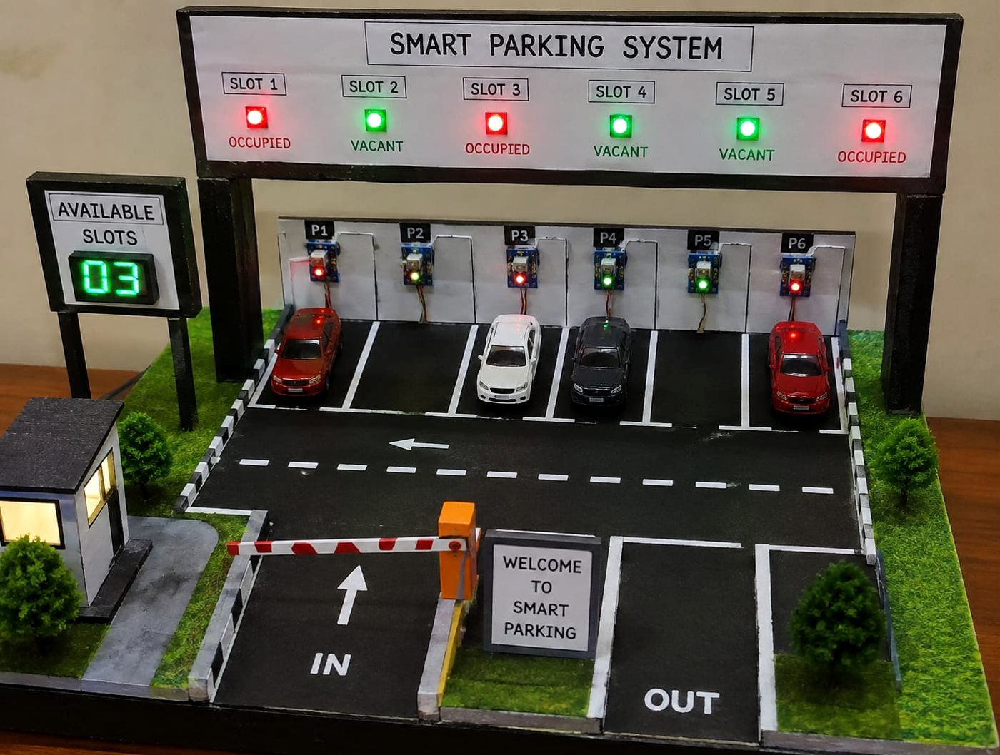
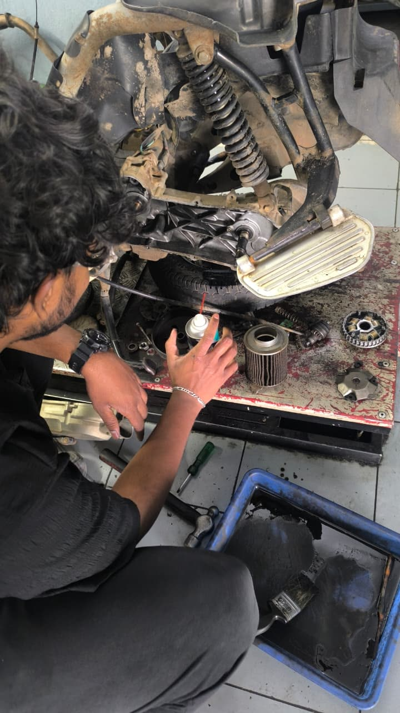
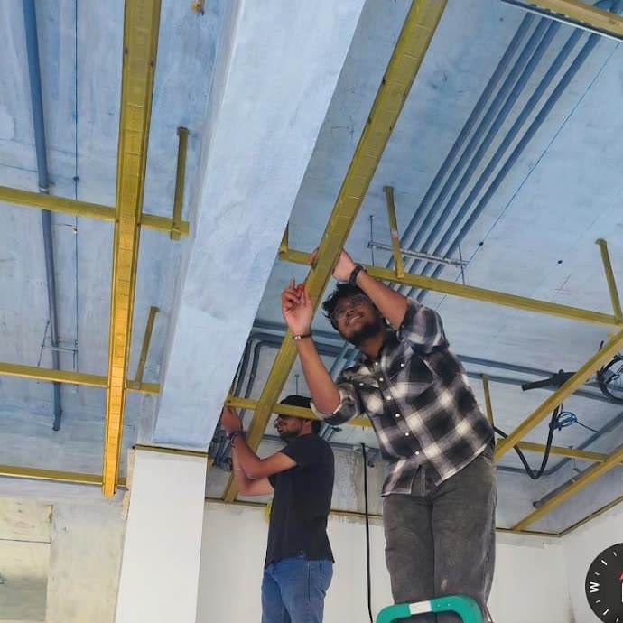
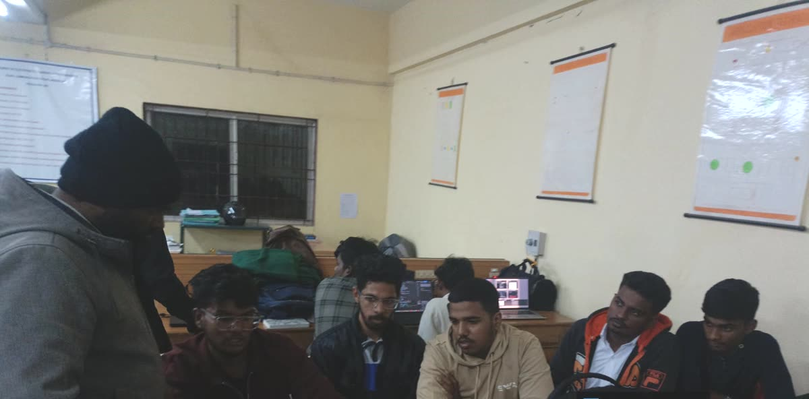
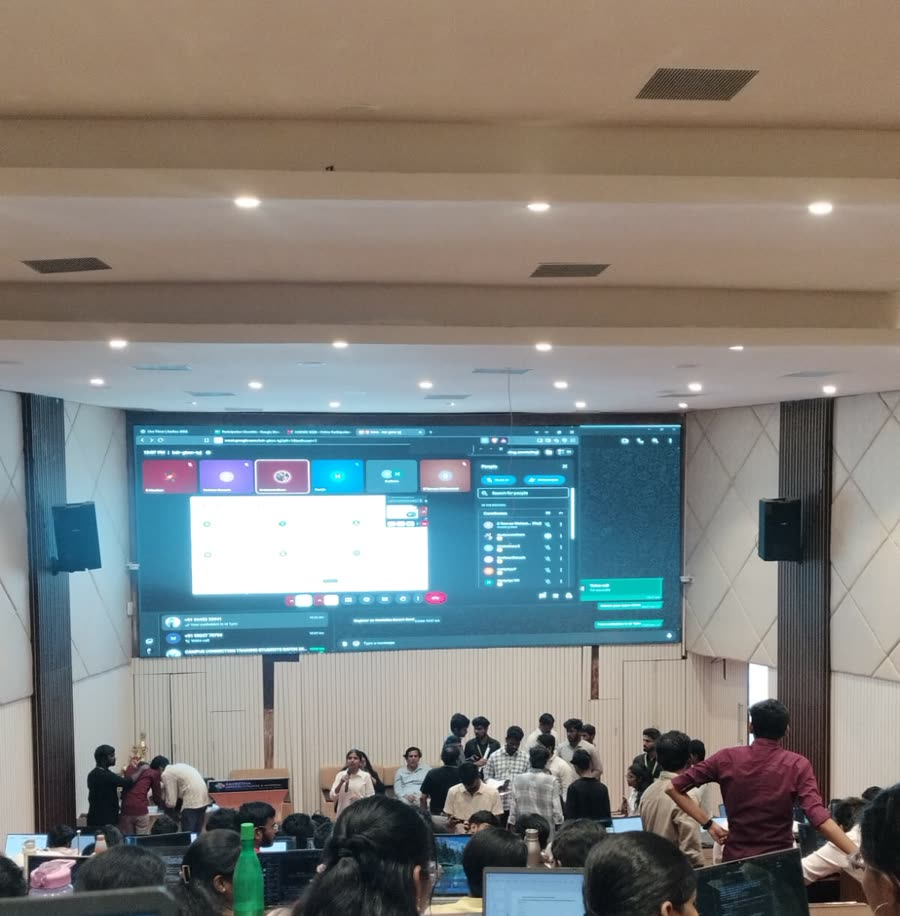
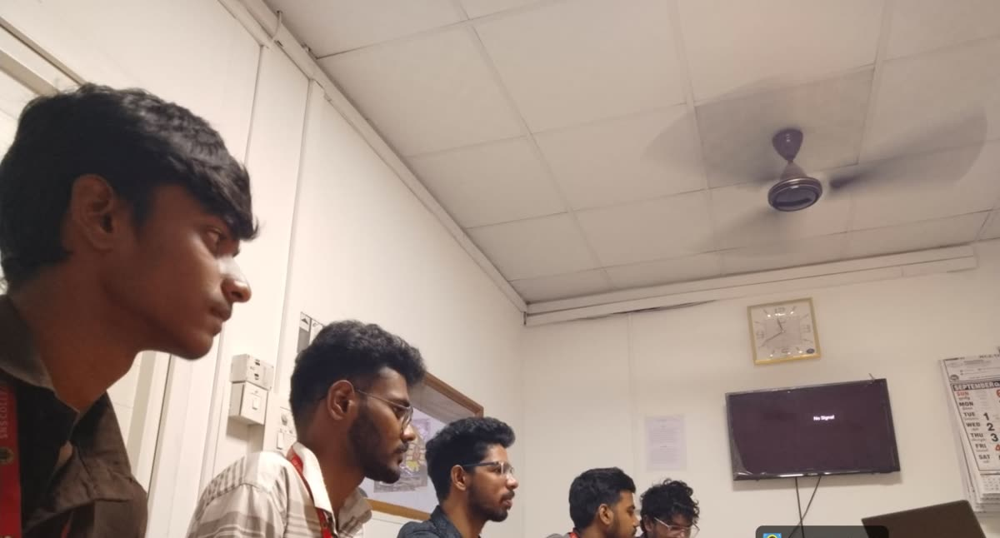

01 / 06 · Who
Hi, I'm Sree Hari.
A software engineer who builds for machines. I'm a Mechatronics student at SNS College of Technology, Coimbatore. I write AI, web and automation software, then wire it into real hardware.
Open to internships & freelance · Coimbatore / remote
StudentEngineerin progress
I build web apps with AI inside them, automate the boring work with n8n-style workflows, and write the software that drives PLCs and robot arms — so machines do more and people do less of the repetitive stuff.
Now building Smart Ladder — an AI that writes verified PLC code · SIH 2026
02 / 06 · AI & web
Next.js and TypeScript apps with AI doing real work inside them — like Smart Ladder, which turns a plain-English description into verified, safety-checked PLC code.
03 / 06 · Software automation
I'm deep into workflow automation with tools like n8n — webhooks, APIs and AI agents that link sensors, sheets and alerts so the repetitive work just happens.
04 / 06 · Hardware automation
Ladder logic, HMIs and safety interlocks. FoldX, our PLC fabric-folding machine, reached the national final of the 6th Mitsubishi Electric Cup.
05 / 06 · IoT & robotics
Arduino and ESP32 builds, sensors, robot arms and e-Yantra robotics — devices that report to the software above them.
06 / 06 · Why I build
Connect software to the physical world so everyday work gets faster, safer and cheaper — for factories, campuses and the people in them.
( A )
Every project I build starts as code and ends as something that moves, measures or decides in the real world.
( B )
One engineer for the whole chain — the AI, the web app, the workflow and the machine it drives.
See the work( 01 )Selected work
Describe it in plain English — get ladder logic, IL code and a logic explanation.
Watch the full demoSmart Ladder (SIH) · YouTube ↗( live )Try the logic Smart Ladder writes
IL LD X0 · OR Y0 · ANI X1 · ANI X2 · OUT Y0
Press START, then let go — the seal-in keeps the motor running. That's ladder logic.

( 02 )Software automation
An example of the kind of flow I build toward: n8n-style automation where a machine event becomes a decision, a record and an action — without anyone copying data by hand.
REST APIs, webhooks and MQTT-style messaging so PLCs, ESP32s and web apps talk to each other.
LLMs and rule engines that check, summarise and choose — with validation, so the output can be trusted.
Workflows that log, alert and push changes back to the machine — the boring work, automated.
( 03 )Freelance & brands
Alongside college I take on real work: hardware builds for clients and digital work for 3–4 startups. Different briefs, same rule — ship something that works.

Client buildA six-slot parking model built for a client. An IR sensor in every bay drives live occupied / vacant lights on the gantry, a digital board counts the free slots, and a barrier guards the entry.
IR sensors ×6Microcontroller7-segment displayServo barrierModel design
A remote digital-solutions startup — apps, web and AI. I handle its Instagram: the Play Store app launch, brand campaigns, workshop promotions and festival posts.
@skill_hive_innovations ↗ Media page · InstagramA news and current-affairs page I run — researching, writing and designing quick-read carousels every week.
@incredible.scroll ↗( 04 )Work with me
Fast websites, web apps and dashboards — with AI features built in where they actually help.
Next.js · AI · DashboardsLadder logic, HMI screens, machine sequencing and safety interlocks — designed to be safe first.
Ladder · HMI · InterlocksArduino and ESP32 prototypes, sensor systems, and the dashboards and APIs they talk to.
Arduino · ESP32 · RESTn8n-style automations that connect your forms, sheets, WhatsApp, AI and machines — so repetitive tasks run themselves.
n8n · Webhooks · APIsTell me about your projectIndia & international clients · remote friendly
( 05 )Journey
( 01 / 09 )
Hands-on drivetrain and CVT servicing — the mechanical side of mechatronics.

Programmed a stationary robot arm for a Mars-base logistics challenge — pick, place and hand-off, built and tested in simulation first.
FoldX — Certificate of Appreciation for commendable performance.
Autonomous patient-delivery car challenge. We didn't advance — and learned more about line-following and timing than any classroom taught.
On-site ducting and wiring at a commercial tower — real installs, real deadlines.

Team lead — an overnight build session in the hills.

Led the team through a timed build in a hall of hundreds.

Walked engineers through the tool and took their feedback into the next build.

A team of six building Smart Ladder — shortlisted in the internal round (Student Innovation). Next rounds in progress.
( 06 )Skills
( 07 )Beyond engineering
At a college fest, a few friends and I ran a mobile-accessories stall — sourcing stock, setting prices, pulling in customers. It taught me what clients actually care about: what it does for them, what it costs, and when they'll have it.
( 08 )Latest
Software, AI and automation — in India or remote. Looking for the team that will give me a real problem and the room to prove myself.
Get in touch →Our team of six cleared the internal round in the Student Innovation category. Next rounds in progress.
Read the case study →Describe a machine in plain English — get verified, safety-checked ladder logic and a virtual station to test it.
Try it ↗An industry visit put the tool in front of people who write PLC code for a living — their feedback shaped the next build.
See the journey →A timed build in a hall of hundreds at Saveetha — one of three hackathon teams I've led this year.
See the journey →Our PLC fabric-folding machine reached the national final at MIT-WPU, Pune, and took a Certificate of Appreciation.
See FoldX →Built it. Shipped it. Led it. Next: the stage.
I've built AI tools, taken a machine to a national final, led hackathon teams and delivered for clients and startups. What I'm asking for now is a stage — one opportunity to perform at full capacity and prove what I can do for your team. Give me a real problem, and I'll give you something that runs.
LinkedIn ↗ GitHub ↗ PLC AI Studio ↗
Ready when you are